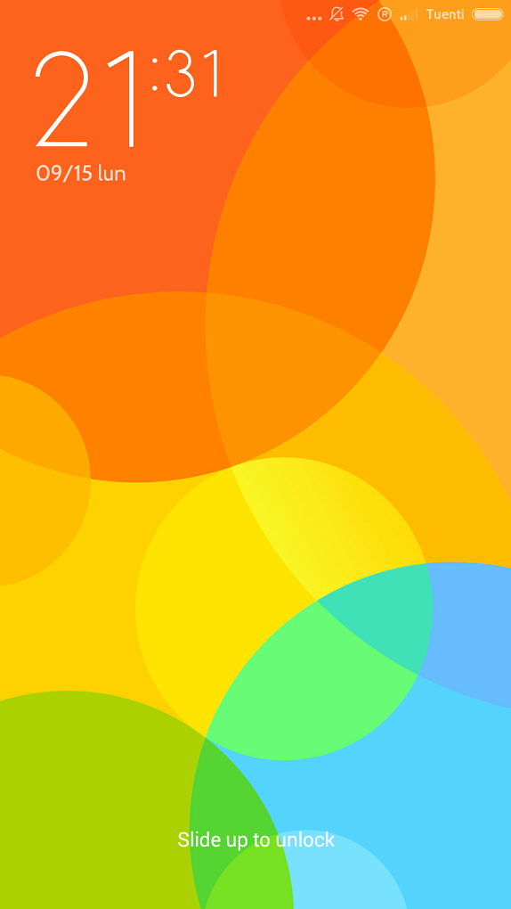
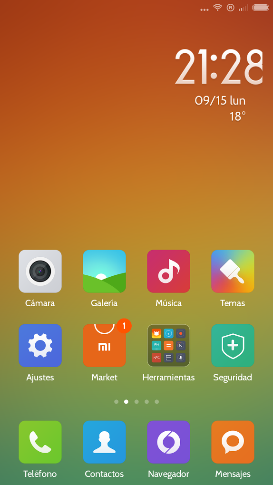
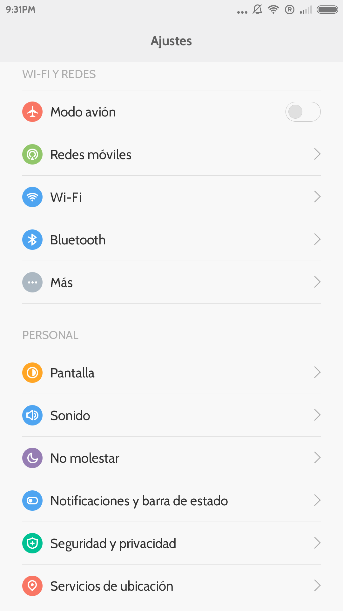

Instalando MIUI6 en mi Xiaomi MI3W
Miui es un firmware para smartphones basado en el sistema operativo de código abierto Android desarrollado por Xiaomi Tech y viendo que había salido la version oficial de MIUI6 y que ya se encontraba disponible la Rom traducida al español por parte de los chicos de miui.es, me decidí a actualizar mi Xiaomi MI3W de MIUI v5 a MIUI6
Proceso
Antes de nada lo que hice fue actualizar mi CWM Recovery a la versión 6.0.5.0. Para ello, después de descargar el archivo, lo coloque en la raíz de la memoria del teléfono, reinicié en el recovery e instalé como si de una ROM se tratase.
Las características de este recovery son las siguientes:
• Activación y desactivación de True Dual Boot
• Aroma File Manager
• Manejo con la pantalla táctil
• Limpieza de la partición /data (wipe data)
• Limpieza de la caché (wipe cache)
• Creación y restauración de copias de seguridad NAND (sistema y datos)
• Apagado del dispositivo
• ADB en modo recovery
Actualizado el CWM recovery procedí a descargar la Rom (4.9.9) traducida por miui.es y a copiarla a la memoria interna (Internal Storage) del Mi3W.
Apagué el móvil y lo inicié en modo Recovery (Pulsando Botón Encendido + Volumen Arriba).
Seleccioné el system donde instalar la rom (system1)
Hice los wipes "wipe data/factory reset" "wipe cache partition" y “wipe dalvik cache" para hacer una instalación limpia.
Después seleccioné las opciones: "Install zip from sdcard" --> "chosse zip from sdcard" --> "0/"
Navegué por los archivos hasta encontrar y seleccionar el archivo .zip de la Rom. Confirmé la instalación y esta se realizó.
Para finalizar reinicié pulsando "reboot system now”, dando por finalizado la instalación.
Pantallazos
  